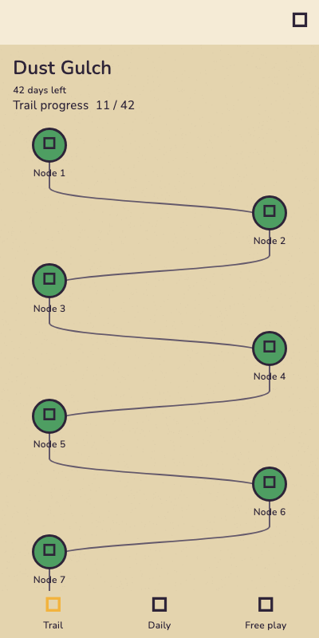
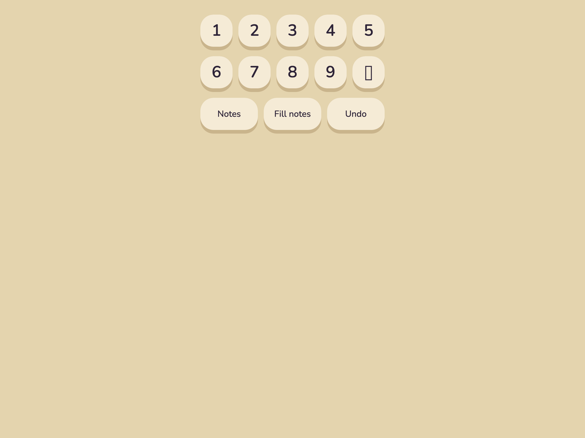
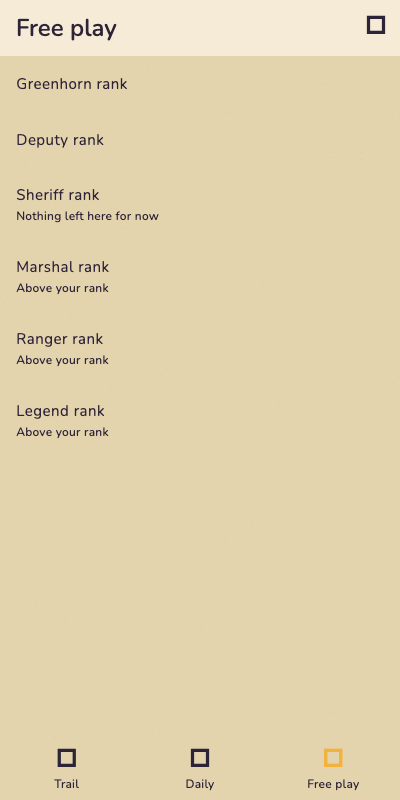

The app renders its mechanics correctly and its personality not at all. Everything below is drawn with the eight palette tokens and needs no commissioned art — it is vector and layout work that ports straight to Flutter widgets and a CustomPainter.
Why it looks plain — three causes, all fixable in code.1. Every node is a Material Design icon — Icons.grid_on, Icons.lock_outline, Icons.card_giftcard. Stock Google glyphs are the single biggest reason nothing reads as a cartoon.
2. There are no offset shadows anywhere. DESIGN.md §4 makes a 4px solid shadow mandatory on “every card, button, node, and the grid itself” — the marker is a flat Container with a border. Flat fill is what the doc calls “the fastest way to look cheap”.
3. The props and the cast were never built. trail_screen.dart admits it in a comment: “the artwork the mockup draws around it (the cactus, the wagon, Biscuit) is still add-running-gags.” That is backlog change 22, behind change 20 — the whole of Milestone 3, titled “the reason it exists — done when: the game is funny.”
01 · Trail
Left is the current golden test render. Right is the same trail, same data, same eight tokens, same accessibility rules — redrawn.
Now — trail_mid_season.png

Proposed — same data, redrawn
9:41Dust Gulch◍ ◍ ◍
Dust Gulch
Season 1 · 19 days left
7days
Trail progress13 / 42
Trail
Daily
Store
Cabinet
Done
You are here
Chest
Boss · Ace
What changed on the trail
Nine changes. None of them needs an illustrator, a Rive rig, or a new colour.
DESIGN.md §4
Solid offset shadows on everything
4px hard shadow in the depth shade — #2F6E3F under green, #B47A15 under gold, #C9B48C under sand. This is the single biggest change and it is three lines per shape. “Blur reads corporate; solid offset reads toy.”
DESIGN.md §3
Thick contour, thin interior
3px outer, 2px inside — the cactus ribs, the wagon planks, the wheel spokes. The current marker uses one uniform 3px border, which the doc names as “the most common tell of lifeless vector art”.
§7 · change 22
Biscuit stands at the current node
He is not decoration — he is the “you are here” marker, and he walks down the trail as you progress. Drawn in sand and ink with an indigo blanket, so he costs no new hue. The mockup’s brown burro is not palette-legal; a dun burro is, and is also what a burro looks like.
§4 · D-112
Node shape carries type, colour carries state
A chest is chest-shaped, a boss is a sheriff’s star, a puzzle is a disc. Today all four are circles distinguished by a Material icon. Shape-coding means the trail still reads in greyscale — which is the accessibility rule the code already honours, done better.
screens.html
“Node 1 … Node 42” is deleted
Forty-two labels turn a territory into a list. The number belongs inside the current node only; a tick says “done” and a padlock says “not yet”. The screen-reader label keeps every word it has today — this changes the visual only.
DESIGN.md §4
Nothing perfectly aligned
The name plank sits at −1.6°, the streak badge at +3°. The doc asks for 0.5–2° on cards and bubbles; the current screen is on a perfect grid.
screens.html
The header is a wooden sign, not a text block
A plank with two nail heads, an offset shadow, and the season below it. Same three pieces of information, one piece of scenery instead of three stacked Text widgets.
ART-PROMPTS B
Props alongside the trail
Cactus, buckboard wagon, rocks, scrub. ART-PROMPTS.md §B calls these “ships as-is” and “the cheap seasonal variable” — they rotate per season while the rig stays. At this size they are vector shapes, not illustrations.
screens.html
Progress is a track, not a sentence
“Trail progress 11 / 42” as plain body text is the least game-like way to show progress. A gold fill in an ink-bordered track with depth costs nothing and reads instantly.
02 · Puzzle — the core loop
Where players spend almost all of their time. The grid itself is deliberately left alone — DESIGN.md §4 forbids depth treatment on cells, because thick borders on nine columns destroy readability. Everything around the grid is the opportunity.
Now — pad_default.png

There is no golden for the assembled puzzle screen. The grid and the pad are each tested in isolation, so no test — and no person — has ever looked at the whole screen at once. That is worth fixing on its own.
The erase key renders as a tofu box. Bottom-right of the pad: □. A glyph the bundled font does not have. It is in a committed golden, so the golden froze the bug.
Proposed — the whole screen
‹
Node 14Sheriff rank
04:12
Ace
That's one for the wall.
1
2
3
4
5
6
7
8
9
Notes
Fill notes
Undo
D-40 · change 20
The character strip is the whole point
Ace slides up, holds 2.5 seconds, leaves. Empty the rest of the time — “a stage, not a container”. This is the single feature that separates the product from every other sudoku app, it is specified in screens.html Screen 02, and it does not exist in the build. Milestone 3 is named after it.
DESIGN.md §3
The pad keys have no outline
Bone keys on a sand ground with no contour and a soft shadow — the two things §3 and §4 explicitly forbid. A 3px ink contour and a hard 4px offset is the whole fix, and it is what makes a key look pressable.
D-100 · D-101
The tools row is already right
Named in words, three by default, the rest appearing only when relevant. Keep it. Only the pressed state needs the §4 treatment — dropped 4px, depth down to 1px.
D-10 · D-11
The two inks earn their own showcase
Settled notes in indigo, provisional in turquoise, in fixed 3×3 slots that never reflow. Almost nobody ships this and the screen does nothing to show it off. The grid above holds both.
screens.html
The top bar carries the stakes
Node number, rank, and a gold timer chip with depth — not an empty AppBar. The back control is a pressable disc, which is also the only affordance on the screen that currently has none.
03 · Free play — the rank ladder
This is the worst screen in the app, and the easiest win. Six ranks are the game's entire progression fantasy — Greenhorn to Legend — and they render as a bulleted text list.
Now — picker_mid_ladder.png

Proposed — a wall of tin stars
‹
Free playAny rank, any time
Sheriff
Greenhorn
Naked singles
Deputy
Hidden singles
Sheriff
Pointing pairs
Your rank
Marshal
Naked triples · above your rank
Ranger
X-wing · above your rank
Legend
Chains · above your rank
Trail
Free play
Rank names are D-57. The technique under each one is my guess at the mapping — read it from the grader before building, do not trust this page for it.
D-103
Above your rank is a label, never a lock
Marshal upward stays full-strength, fully tappable, same target, same route — exactly as the code already does it. A bone star instead of a gold one says “not yet earned” without saying “you may not”. Greying these out would be the easy mistake and it would break constraint 1.
D-57
A rank is a badge, not a row of text
Six tin stars, earned ones in gold, your own larger and on a goldPale band with a crooked “your rank” tag. The ladder becomes something to look at rather than a menu to read.
D-07
Say what the rank means
A rank is the hardest technique the puzzle requires — so name the technique under the rank. “Sheriff rank” alone tells a new player nothing; “Sheriff · pointing pairs” teaches the ladder for free.
04 · Node complete — the reward beat
The most commercially sensitive screen in the product, and the one with no implementation and no golden at all. screens.html calls the category leader's worst habit “congratulating the player then immediately serving an ad”, and the fix is a tap between the two.
Proposed — nothing exists to compare
Node 14 cleared
Filed with the territory
Pointing pairs
Technique unlocked · 06:44 · personal best
Ace
Beginner's luck, deputy.
Continue
Interstitial fires here after the tap · if one is due
Double this chestWatch · 30s
Why this screen matters most
D-24
Celebration, tap, then ad
Never before the tap. An ad on the reward beat reads as an ambush; after an explicit tap it reads as a transition. The dashed slot marks exactly where it is allowed to fire.
D-22
There is no failure variant
Boss retries are unlimited and free. At the season's most loaded moment there is nothing to lose — which is the entire positioning in one screen.
D-26
Ace closes the loop
He tallies your mistakes and cheats at numbers, so he is the right voice for a grudging compliment. A reward screen with no character attached is a receipt.
§4
The card sits crooked
−1.1° on the reward card, +1° on the speech bubble. Perfect alignment on a celebration is the tell that nobody is enjoying it.
05 · The cabinet — the retention engine
The only layer that never resets. Territories rotate out; this is what makes rotation feel like accumulation instead of loss. Not built — trophy-cabinet is a later backlog change — but it is worth seeing now, because it is the one screen that is pure personality by design.
Proposed — a wall with visible gaps
‹
Deputy recordPermanent
Sheriff
Wanted posters · one per territory
III
IV
V
Daily · august
★
28
29
30
Technique record
Hidden singles0:41 avg
Pointing pairs1:58 avg
Naked triples4:12 avg
X-wingNot yet filed
Why gaps beat absence
D-21
Unearned posters show as empty frames
Visible gaps drive return far better than hiding what is unearned — without shaming, because an empty frame states a fact and makes no accusation. Dashed, low-emphasis, numbered.
D-45
Every poster is the player's own deputy
The avatar composites into each one — hats, moustaches, kerchiefs, badges. Cheap to produce, seen constantly, and it makes the store's output the thing on the wall.
D-17
Three independent layers, three shelves
Permanent, seasonal, daily. The shelf metaphor does the explaining that a tab bar would have to do with words.
The shared kit
You said this is true of all the screens, and it is — because the cause is shared. These five moves are the house style, and they apply everywhere.
Retire the Material icons
Every glyph in the app is a stock Google icon. Drawn glyphs — a boot, a star, a chest, a lasso — are what make a toolbar look like a game instead of a settings screen.grid_input · season_map · rank_progression
Depth on all chrome
4–5px offset shadow at rest, 4px travel and 1px depth when pressed. The doc says this alone “is most of why a casual game feels good to tap”. Never on grid cells.DESIGN.md §4
Overshoot, never fade
easeOutBack at ~15%. Things pop, drop, or slide in from where they came from. A fade is the default and the default is what reads as plain.DESIGN.md §4 · §5
Paper grain, visibly
PaperGrain exists and is wired up, but it does not survive into the goldens. If it is too faint to photograph it is too faint to matter.design_system/paper_grain.dart
One open question: the display face
Only Nunito ships. A frontier game with no display face for titles has no voice above 20px. DESIGN.md §2 rules out slab and tuscan below 12px — but a title plank is a logo, and the doc allows western lettering there.D-74 · needs a decision